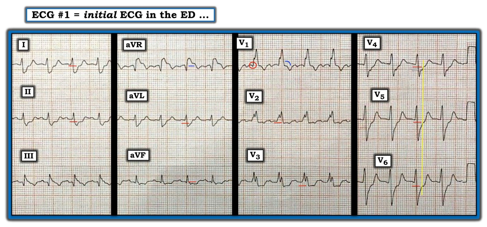
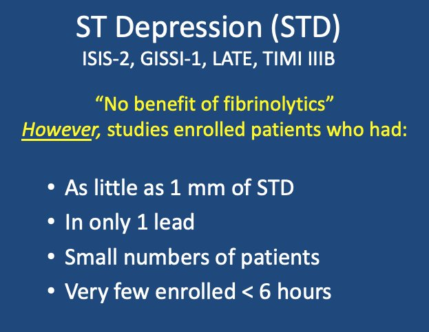
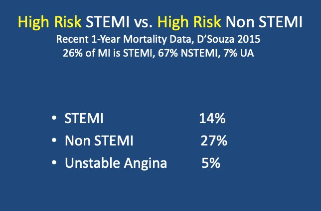
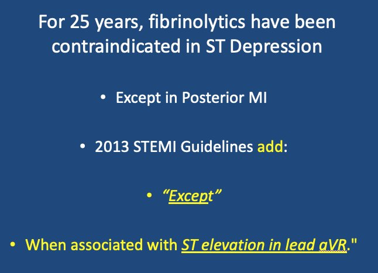
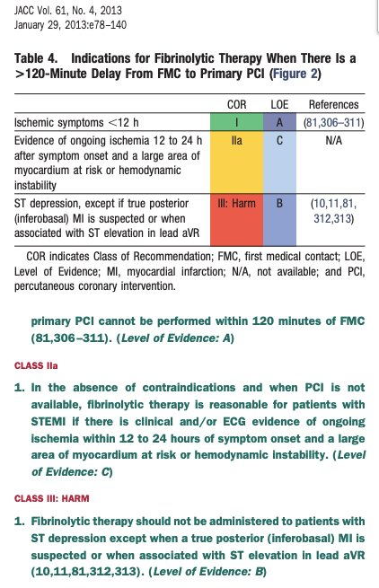

15/07/2020 — Đau ngực và ST chênh xuống do thiếu máu cục bộ — nhưng không có phòng thông tim. Dùng tiêu sợi huyết?
Bản dịch tiếng Việt của bài "Chest Pain and Ischemic ST Depression — but there is no Cath Lab available. Thrombolytics?" – Dr. Smith’s ECG Blog. Giữ nguyên toàn bộ 7 hình ảnh của bản gốc.
===================================
BÌNH LUẬN CỦA TÔI, bởi KEN GRAUER, MD (14/7/2020):
===================================
Người đàn ông trung niên này có tiền sử tăng huyết áp và rối loạn lipid máu, đến khoa cấp cứu (ED) vì đau ngực mới khởi phát 2 giờ — với điện tâm đồ như trong Hình 1. Bệnh nhân ổn định huyết động. Không có bản ghi cũ để so sánh.
- Bạn sẽ diễn giải NHƯ THẾ NÀO điện tâm đồ trong Hình 1?
- Kích hoạt phòng thông tim (cath lab) ngay lập tức không phải là một lựa chọn tại bệnh viện này. Có nên dùng tiêu sợi huyết cấp không?

SUY NGHĨ CỦA TÔI về điện tâm đồ #1: Tôi đã đánh dấu các dấu hiệu MẤU CHỐT trong Hình 2. Nhịp trong điện tâm đồ #1 là nhịp nhanh xoang với tần số ~110-115/phút. Khoảng PR bình thường — nhưng phức bộ QRS rộng. QTc có vẻ kéo dài — nhưng điều này khó đánh giá do tần số nhanh.
- Hình thái QRS phù hợp với RBBB hoàn toàn (tức là, QRS giãn rộng; dạng qR với phần dương chiếm ưu thế ở chuyển đạo V1 — sóng S tận rộng ở các chuyển đạo bên I và V6).
- Sóng Q khởi đầu, với dạng qR (thay vì phức bộ rsR’) ở chuyển đạo V1 là điều quan trọng cần lưu ý (bên trong vòng tròn ĐỎ ở chuyển đạo V1 của Hình 2). Dấu hiệu này có thể chỉ ra nhồi máu vách không rõ tuổi.
- Một sóng Q lớn và rộng hơn mức lẽ ra phải có được thấy ở chuyển đạo III (tức là, sóng Q ở III này “lớn” khi xét đến biên độ khiêm tốn của sóng R ở chuyển đạo này). Một sóng q nhỏ cũng thấy ở chuyển đạo aVF — nhưng không thấy sóng Q ở chuyển đạo II. Ý nghĩa của các sóng Q thành dưới này chưa chắc chắn.
- Không có lớn buồng tim.
- Dấu hiệu nổi bật nhất là ST chênh xuống lan tỏa ở không dưới 9 trên 12 chuyển đạo. Ranh giới không rõ giữa điểm kết thúc sóng S (của phức bộ QRS) và điểm J — đánh dấu khởi đầu đoạn ST — khiến việc định lượng chính xác mức ST chênh xuống ở một số chuyển đạo trở nên khó khăn. Để cho rõ — tôi đã vẽ các đường ngang ngắn màu ĐỎ tại điểm mà tôi cho là thể hiện mức ST chênh xuống — mức này đáng kể khi xét đến biên độ sóng R khiêm tốn ở hầu hết các chuyển đạo.
- Có ST chênh lên ở chuyển đạo aVR (đường ngang màu XANH thể hiện mức chênh).


NHẬN ĐỊNH LÂM SÀNG: Với bệnh sử đau ngực mới khởi phát — các dấu hiệu trên điện tâm đồ #1 cực kỳ đáng lo ngại:
- Có nhịp nhanh xoang với tần số 110-115/phút.
- Có RBBB hoàn toàn — kèm sóng Q ở chuyển đạo V1 phù hợp với nhồi máu vách không rõ tuổi. Không có bản ghi cũ để so sánh — không thể biết RBBB là mới hay cũ.
- Các sóng Q ở chuyển đạo III và aVF, cùng với đoạn ST khó diễn giải ở chuyển đạo III (có thể vừa mới chênh lên gần đây) có thể phù hợp với nhồi máu thành dưới không rõ tuổi. Tôi nghi ngờ đây không phải là tổn thương mới.
- ST chênh xuống lan tỏa, rõ rệt, kèm ST chênh lên ở chuyển đạo aVR phù hợp với thiếu máu cục bộ dưới nội tâm mạc lan tỏa. Với bối cảnh lâm sàng này — nguyên nhân nhiều khả năng nhất của dấu hiệu này là bệnh mạch vành nặng (tức là, thân chung động mạch vành trái (LMain), LAD đoạn gần, hoặc bệnh nhiều nhánh mạch vành) — nhưng không phải OMI cấp.
ĐIỂM THEN CHỐT (PEARL): Chúng ta dự kiến thấy ST-T âm ở các chuyển đạo trước khi có RBBB. Dù vậy — Chúng ta không dự kiến thấy những điều sau với RBBB “điển hình”:
- ST dạng vòm (coving) ở chuyển đạo V1 (như đường cong màu XANH ở chuyển đạo này).
- Hình dạng ST chênh xuống kiểu gờ (phẳng) mà ta thấy ở chuyển đạo V2 và V3.
- Mức ST chênh xuống tăng dần khi ta đi qua các chuyển đạo ngực (tức là, ST chênh xuống ở điện tâm đồ #1 lớn nhất ở chuyển đạo V3, và vẫn còn đáng kể đến tận chuyển đạo V6 — thay vì lớn nhất ở chuyển đạo V1, V2 như lẽ ra thấy với RBBB điển hình).
- RBBB điển hình thường tạo sóng T dương không kèm ST chênh xuống ở các chuyển đạo bên. Nó không tạo ra ST chênh xuống như ta thấy ở đây tại các chuyển đạo I, aVL; V4, V5 và V6.
Chúng tôi đã bàn về thực thể thiếu máu cục bộ dưới nội tâm mạc lan tỏa trong nhiều dịp trên Dr. Smith’s ECG Blog (Để xem 1 ví dụ — XEM bàn luận của Dr. Smith + Bình luận của tôi ở cuối trang trong bài đăng ngày 13 tháng Năm năm 2020).
- Một Điểm cần học quan trọng từ ca hôm nay là nhận ra thiếu máu cục bộ dưới nội tâm mạc bất chấp sự hiện diện của RBBB hoàn toàn.
- Về bàn luận xử trí ca này — XEM các bình luận bên dưới của Dr. Smith.
================
- LƯU Ý: Xin chân thành CẢM ƠN Dr. Eduardo Lapa (từ Brazil) đã chia sẻ bản ghi và ca bệnh này với chúng tôi!
================

BÌNH LUẬN của Dr. SMITH:
Điện tâm đồ này biểu hiện thiếu máu cục bộ dưới nội tâm mạc lan tỏa. Nhưng thiếu máu cục bộ có thể do hội chứng vành cấp (ACS) hoặc do các căn nguyên không phải ACS (do mất cân bằng cung-cầu). Chỉ bối cảnh lâm sàng mới làm sáng tỏ được điều này. Tình huống lâm sàng (khởi phát đau ngực lúc nghỉ) gợi ý mạnh đến ACS. Nhưng bác sĩ lâm sàng phải chắc chắn rằng đó không phải nhiễm khuẩn huyết, xuất huyết tiêu hóa, suy hô hấp, thuyên tắc phổi, hẹp van động mạch chủ mất bù, hay các căn nguyên khác, trước khi kết luận rằng đó thực sự là ACS.
Đây không chỉ là bệnh động mạch vành (CAD) nặng: điện tâm đồ và triệu chứng đều CẤP TÍNH, với thiếu máu cục bộ đang diễn ra. Thiếu máu cục bộ đang diễn ra không phải là một tình trạng mạn tính; CAD là một tình trạng mạn tính. Vì vậy nếu đây thực sự là ACS, thì có CAD nặng kèm nứt vỡ mảng xơ vữa và huyết khối. Người ta có thể có bệnh mạch vành nặng, nhưng nếu họ đau ngực đột ngột và có thiếu máu cục bộ đang diễn ra, thì họ bị hội chứng vành cấp. Tuy nhiên, đây thực sự không phải là OMI, vì vẫn có dòng chảy trong động mạch, nhưng nhiều khả năng có huyết khối với dòng chảy không đủ.
Xem các bài này:
Does ST Elevation in lead aVR indicate acute coronary occlusion? (ST chênh lên ở chuyển đạo aVR có chỉ ra tắc mạch vành cấp không?)
How does acute left main occlusion present on the ECG? (Tắc thân chung động mạch vành trái cấp biểu hiện thế nào trên điện tâm đồ?)
ST chênh xuống lan tỏa do thiếu máu cục bộ (thiếu máu cục bộ dưới nội tâm mạc — thượng tâm mạc vẫn được tưới máu) luôn có ST chênh lên soi gương ở chuyển đạo aVR, như ta thấy ở ca này. Có ST chênh lên (STE) 1 mm ở aVR. Hãy nhớ aVR được tính từ chuyển đạo I và II, và biểu thị điều NGƯỢC LẠI của một chuyển đạo nằm GIỮA I và II. Vì vậy một chuyển đạo nằm giữa I và II [gọi là (-) aVR] sẽ có ST chênh xuống, trong khi aVR có ST chênh lên.
Vậy hãy giả định rằng bác sĩ lâm sàng đã xác lập được tình trạng thiếu máu cục bộ lan tỏa này thực sự là do ACS:
Có chỉ định tiêu sợi huyết cho hội chứng vành cấp có ST chênh xuống này không?
Trong nhiều năm, ACS biểu hiện bằng ST chênh xuống được cho là KHÔNG phải chỉ định của thuốc tiêu sợi huyết. Điều này dựa trên dữ liệu từ các thử nghiệm tiêu sợi huyết ban đầu, được tổng hợp trong nhóm hợp tác FTT (Lancet 1994), cho thấy không có lợi ích ở các nhóm có ST chênh xuống được phân ngẫu nhiên dùng tiêu sợi huyết.
Tuy nhiên, nếu bạn xem xét kỹ các nghiên cứu đó, chỉ 4 trong 9 nghiên cứu của FTT tuyển bệnh nhân có ST chênh xuống. Dưới đây là phần tóm tắt, trích từ bài giảng trực tuyến của tôi The False STEMI Non-STEMI Dichotomy (Sự phân đôi sai lầm STEMI – Non-STEMI):


Tuy nhiên, có rất nhiều dữ liệu cho thấy tử vong cao khi mức độ lan rộng và độ sâu (nhiều milimét hơn ở nhiều chuyển đạo hơn) của ST chênh xuống tăng lên. Thực tế, tử vong sau một năm ở bệnh nhân nhồi máu cơ tim có ST chênh xuống cao hơn so với bệnh nhân có ST chênh lên:


Điều hợp lý là, nếu có huyết khối trong động mạch gây thiếu máu cục bộ đang diễn ra, dù không tắc hoàn toàn, thì làm tan huyết khối đó có thể mang lại lợi ích (nhưng tất nhiên chỉ khi cũng ngăn được sự hình thành huyết khối tái phát, điều mà với điều trị tiêu sợi huyết được thực hiện bằng cách dùng đồng thời aspirin, clopidogrel 300 mg, và heparin hoặc enoxaparin).
Tuy nhiên, chưa ai từng chứng minh điều này trong một thử nghiệm ngẫu nhiên giới hạn bệnh nhân trong vòng dưới 6 giờ, với ít nhất 1-2 mm ở ít nhất 2 chuyển đạo. Rất có thể là với ST chênh xuống (STD) ở I, II, aVF, và V3-V6, và STE ở aVR, thì tiêu sợi huyết sẽ được chứng minh là có lợi.
Năm 2013, hướng dẫn của ACC/AHA dường như đã nhận ra điều này và thay đổi khuyến cáo:


Đây là đường dẫn tới tài liệu đó. Nội dung nằm ở trang e95:
https://www.onlinejacc.org/content/accj/61/4/e78.full.pdf?download=true (toàn văn PDF hướng dẫn của ACC/AHA trên tạp chí JACC)


Đây là một sự đảo ngược rất bất ngờ đối với khuyến cáo lâu nay CHỐNG LẠI thuốc tiêu sợi huyết cho ST chênh xuống. Tôi tin rằng điều đó là phù hợp. Nhưng tôi cũng nghĩ rằng nó nên được giới hạn chặt chẽ hơn nhiều so với những gì họ khuyến cáo, vì thuốc tiêu sợi huyết tiềm ẩn nguy hiểm.
Vì vậy đây sẽ là cách xử trí của tôi nếu không có phòng thông tim:
1. Phòng thông tim không sẵn có đến mức nào? Cách 1 giờ, 2 giờ, 3 giờ? Hoàn toàn không có?
2. Bệnh nhân không ổn định đến mức nào? Đang sốc hay phù phổi? Nếu vậy bệnh nhân cần điều trị ngay lập tức.
3. ST chênh xuống sâu và lan rộng đến mức nào?
4. Nguy cơ nền? Tuổi, phân suất tống máu nền?
5. Nguy cơ của điều trị tiêu sợi huyết? (Chủ yếu là nguy cơ xuất huyết nội sọ là bao nhiêu?)
Hơn nữa, tôi sẽ cố gắng làm giảm thiếu máu cục bộ bằng điều trị chống thiếu máu cục bộ, chống kết tập tiểu cầu và chống huyết khối:
1. Tôi dùng nitroglycerin tĩnh mạch, ở mức tối đa mà huyết áp của bệnh nhân dung nạp được.
2. Cho các thuốc kháng tiểu cầu, aspirin và clopidogrel (Thường quy là cho clopidogrel 300 mg cùng với thuốc tiêu sợi huyết)
3. Cho enoxaparin hoặc heparin không phân đoạn
Sau đó đánh giá lại. Cơn đau và ST chênh xuống đã hết chưa?
Nếu bệnh nhân vẫn còn thiếu máu cục bộ nặng, thuộc nhóm nguy cơ cao, không có nguy cơ chảy máu cao, và bạn ở rất xa bệnh viện có can thiệp mạch, thì dùng tiêu sợi huyết là hợp lý.
Cuối cùng, hãy tiếp tục ghi lại điện tâm đồ nhiều lần. Huyết khối không gây tắc có thể lan rộng và làm tắc hoàn toàn động mạch. Đây là một ví dụ: